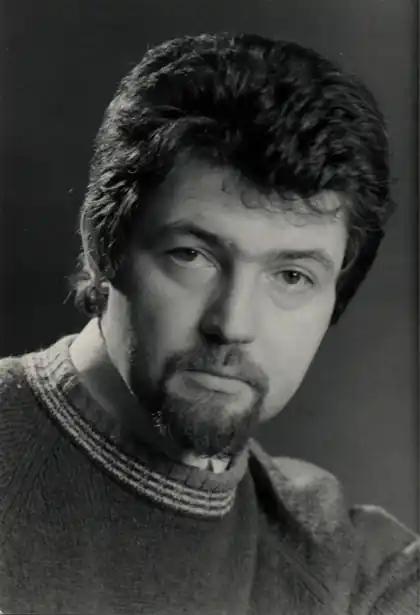
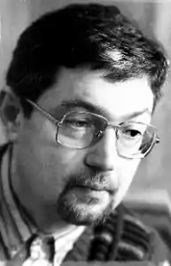
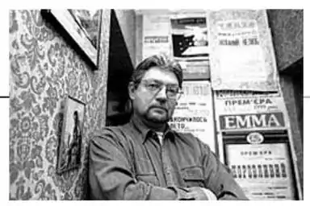

Ярослав Стельмах народився 30 листопада 1949 року у Києві, у сім’ї письменника Михайла Стельмаха. Ріс дитиною обдарованою, з різнобічними інтересами. З дитинства захоплювався спортом, музикою, іноземними мовами. Займався плаванням, потім гімнастикою, а з боксу і боротьби здобув навіть спортивні розряди. Грав на фортепіано, любив стельмах 13 гітару. З малих літ почав вивчати англійську мову і, варто сказати, не без успіху. Після закінчення середньої школи вчився в Київському інституті іноземних мов, потім в аспірантурі, займався перекладацькою діяльністю. "Я почав перекладати, – згадує Ярослав Михайлович, – іще навчаючись в Київському інституті іноземних мов. Спершу мене зацікавила книга, яку мені привезли з Канади. Автор її – перший в історії свого народу ескімоський письменник Маркузі. Книжка адресована дітям і цікаво, дохідливо розповідає про суворе, сповнене небезпек і тяжкої праці життя ескімоських племен. Звалася вона "Гарпун мисливця" і працював я над її перекладом з великим задоволенням". На час закінчення інституту Ярослав мав уже декілька друкованих перекладів з англійської мови.
Незважаючи на відчутні успіхи в галузі художнього перекладу, несподівано навіть для самого себе Я. Стельмах почав писати твори для дітей. У 1975 році вийшла його перша книжка – збірка оповідань "Манок". Через три рокистельмах 10 прийнятий до Спілки письменників. Потім були повісті "Химера лісового звіра", "Якось у чужому лісі", "Найкращий намет" та інші.
Ярослав Стельмах відомий у літературі і як драматург. Уже перші його п’єси мали неабиякий успіх: у п’ятнадцяти театрах одночасно йшла п’єса "Привіт, синичко!", чималу аудиторію глядачів збирала "Шкільна драма". Щоб хоч частково ліквідувати дефіцит п’єс для наймолодшого читача, Ярослав Стельмах створює "Митькозавр із Юрківки", "Вікентій Прерозумний", які свідчать про знання автором дитячої психології, його вміння розкрити внутрішній світ дитини. Широкої популярності набули також п’єси Я. Стельмаха "Гра на клавесині", "Провінціалки" та інші. За два з половиною десятиліття більше 20 п’єс Ярослава Стельмаха було поставлено театральними трупами. Понад 30 років він працював в драматургії, написав 25 п’єс і зробив майже 50 перекладів драматичних творів. Відбулося більше 100 вистав за його творами, які зіграні 2, 5 тисячі разів, і їх подивилося понад мільйон глядачів.стельмах 1 Драматургічна діяльність Я. Стельмаха була високо оцінена ще у Радянському Союзі. Так, за п’єсу для дітей "Привіт, синичко!" ще у 1979 році він був удостоєний другої премії на Всесоюзному конкурсі на кращий драматичний твір для дітей та юнацтва, а у 1984 році з а п’єсу "Запитай колись у трав" письменникові присуджена Республіканська комсомольська премія ім. М.Островського. Незалежна Україна також відмітила драматургію Я. Стельмаха. У 1996 році йому буластельмах 2 присуджена премія ім. І. Котляревського, 1999 року він названий кращим драматургом року і, на кінець, за книжку повістей і оповідань для дітей "Голодний, злий і дуже небезпечний" у 2001 році він став лауреатом найвищої літературної премії, якої удостоюються дитячі письменники України – премії ім. Лесі Українки. Загинув 4 серпня 2001 року в автомобільній катастрофі. Похований в Києві на Байковому кладовищі поруч з батьком